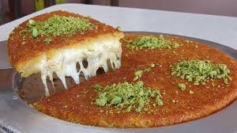

Kunafa Recipe

Ingredients
- sugar syrup
- ghee
- kunala
- corn starch
- sweet cheese
- milk
- cream
Steps
- Brush the bottom of your baking pan with some of the remaininf melted ghee. Take half of the knafeh and spread it evenly.
- Press the knafeh using the bottom of another pan or a cup or a smaller plate. Press down and along the sides of the pan.
- Pour the Ashta (milk pudding) mixture. Spread evenly leaving about half inch all around. Recipe for the Ashta is in the recipe card at the end of the post.
- If you are using the sweet cheese, then grate it and spread it evenly on top of the pudding.
- Add the remaining shredded knafeh , spread it evenly and press lightly with your finger tips.
- Spread the remaining melted ghee on top and bake until nicely browned.